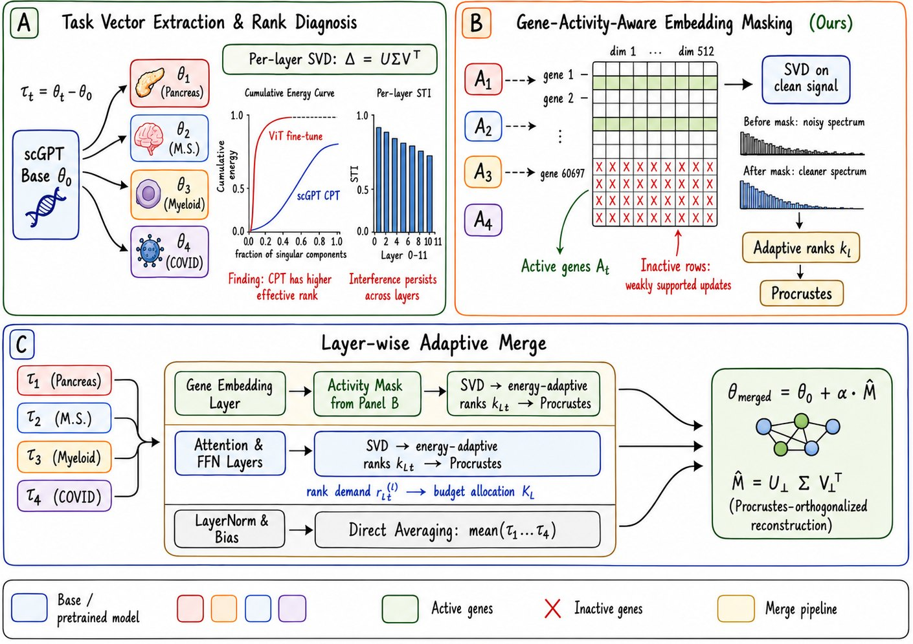

Single-cell foundation models
Biology-aware model merging
- 2025.12 – 2026.04
- IEEE BIBM 2026 · co-first and corresponding author
Fold four domain-adapted scGPT models back into one, without any training data.
At a glance
Problem
Generic merging assumes low-rank updates. scGPT's updates are not low-rank.
Idea
Give each layer the rank it needs, and mask genes that were never active.
Result
Best data-free merge on 6 of 6 datasets.
How it works
- 1Diagnose25–70% of singular components are needed for 95% of an update.
- 2Adaptive rankEach layer keeps the rank its spectrum asks for.
- 3Gene maskingEmbedding updates for unexpressed genes are dropped.
- 4MergeFour checkpoints become one, with no data.
Results
6 / 6datasets: best data-free merge
0.632avg. zero-shot AvgBIO
vs. 0.619 (TSV-M)
vs. 0.619 (TSV-M)
+12.1Macro-F1 points
hPancreas annotation
hPancreas annotation
On COVID-19 data, the merged model beat the single domain-adapted model.
From the paper

My role
Co-first and corresponding author. Developed GA-TSV-M and the rank diagnosis.